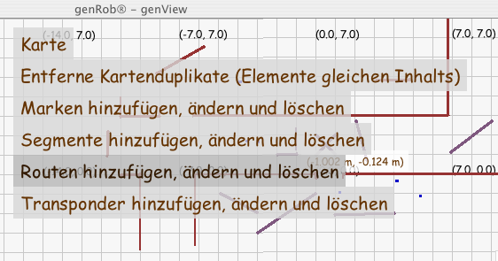

|
Menü
Das Kartenmenü bietet Funktionalität, die zwar zur Arbeit mit der Karte
gehören, aber weder dem
Hintergrund
noch einem speziellen
Element zugeordnet
werden kann.
Die Funktionalität ist im wesentlichen das Umschalten in Verwaltungsmodi,
die das Hinzufügen, Ändern oder Löschen der verschiedenen Typen von Elementen
ermöglichen.
Jeder Elementtyp hat dabei seinen eigenen Verwaltungsmodus
und daher seinen eigenen Menüeintrag.

Berührt ("clickt") man das Menü, so erscheint darunter die auswählbare
Funktionalität in Form mehrerer Einträge.
Berührt man das Menü erneut oder berührt die Oberfläche an einer
anderen Stelle außerhalb des Menüs und seiner Einträge,
so verschwinden die Einträge wieder.
Berührt ("clickt") man jedoch einen Eintrag, so wird in den entsprechenden
Verwaltungsmodus umgeschaltet.

Will man den jeweiligen Verwaltungsmodus verlassen,
so muß man wieder das Menü dazu benutzen.
Es wird dann das "Fixieren" des jeweiligen Zustandes der Elemente angeboten.
Der Umgang mit und die Bedeutung der
Elemente wird
im entsprechenden Kapitel beschrieben.
© 2002-2007
Hagen Stanek,
genRob®
genSite 2.1.2
|
|